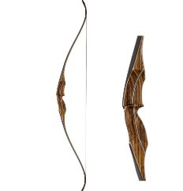
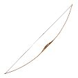
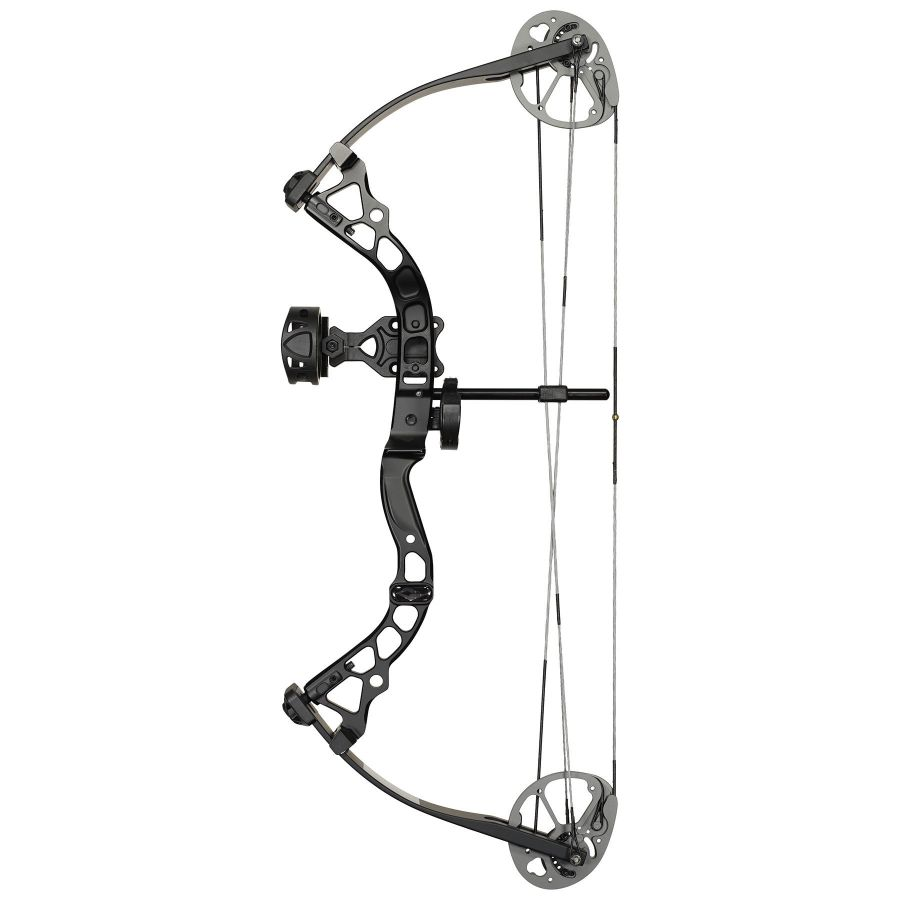
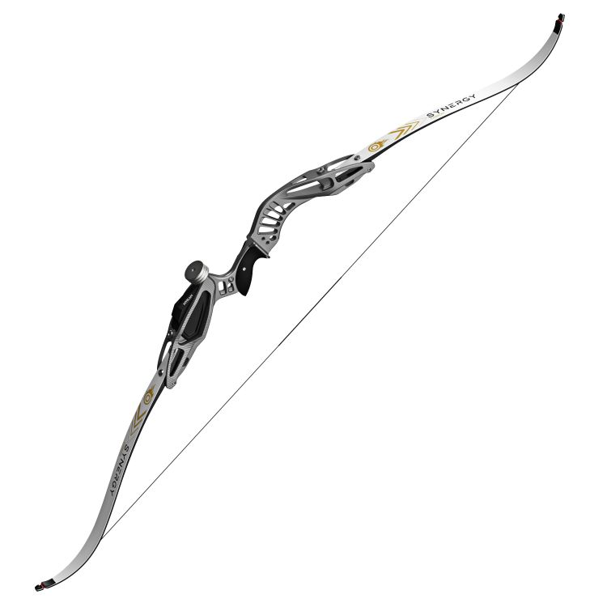
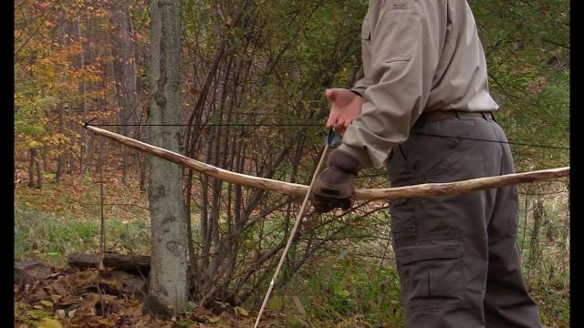
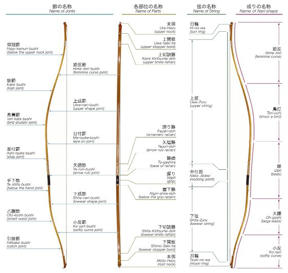

TYPE OF BOWS
A bow consists of a semi-rigid but elastic arc with a high-tensile bowstring joining the ends of the two
limbs of the bow. An arrow is a projectile with a projected tip and a long shaft with fins (fletching)
towards the back, with a narrow notch (nock) at the very end to contact the bowstring.
Recurve or Classical bow
The curved branches and more massive handle of the recurve bow make it easy to identify. It can
be used instinctively without a sighting device, but attachments like a stabilizer, a sight, and
vibration dampers can be enhanced. It comes in a variety of shapes and weights, up to 40 pounds
for adult recreational shooting.

Straight or Longbow
Another common traditional bow is the longbow, which is big (2 meters), straight, and D-shaped.
Depending on your morphology, straight bows can now be found in a variety of sizes. It is
constructed from a single block of yew, boxwood, or glued wood laminate. It is a medieval
English bow with instinctive shooting that is only used by experienced archers who practice
natural shooting.
The longbow has a weight range of 25 to 60 pounds. For the competition, wood must be used to
make the arrows.

Compound bow
The Compound is a bow that has a system of hoists that increases the power and speeds up the
propulsion of the arrows. Size, length, and power are only a few of the many selection factors.
The power of leisure bows can be as little as 12 lbs (for kids) or as high as 75 lbs (for
hunting bows). The use of higher powers will be limited to hunting.
On American design, it is mostly utilized for target shooting, hunting, and outdoor activities.

Barebow
The barebow is a classic recurve or longbow that may be shot without the use of accessories such
a sight, stabilizer, range indicator, or aiming mark. It is used in some field shooting
contests. All of the bow's decorations have been removed, perhaps with the exception of the
button-berger.

Survival bow
Small, foldable longbows are essentially what survival bows are. This implies that they have far
less power than a takedown recurve bow. However, the majority of survival bows can fire
precisely up to 30 yards, which is more than sufficient for deer hunting, particularly in a
survival situation.

The Japanese bow or Yumi
The Kuydo martial art, which is a legacy of the Samurai, is practiced with a traditional Japanese
bow called the Yumi. Fiber or carbon, which were originally made of bamboo, are acceptable. The
bow's asymmetrical handle is in the lower third and is only held with the left hand. The
extremely long bow, which is over two meters long, is unequipped. The Ya is the name of the
Japanese arrow. It can be made of carbon fiber, bamboo, or aluminum.
